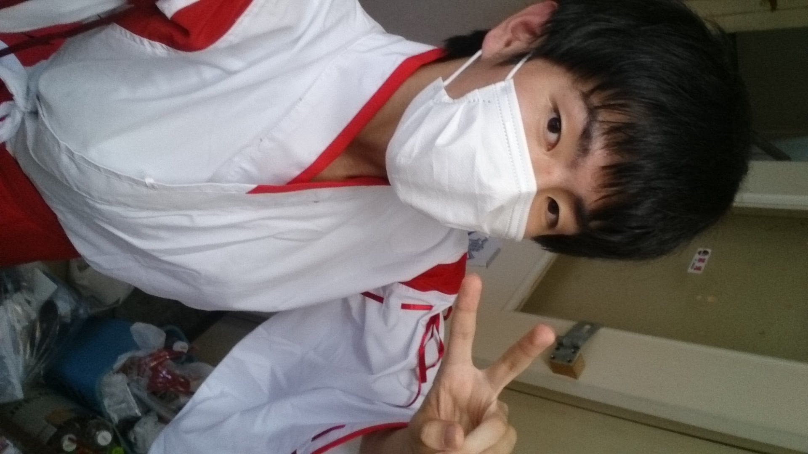
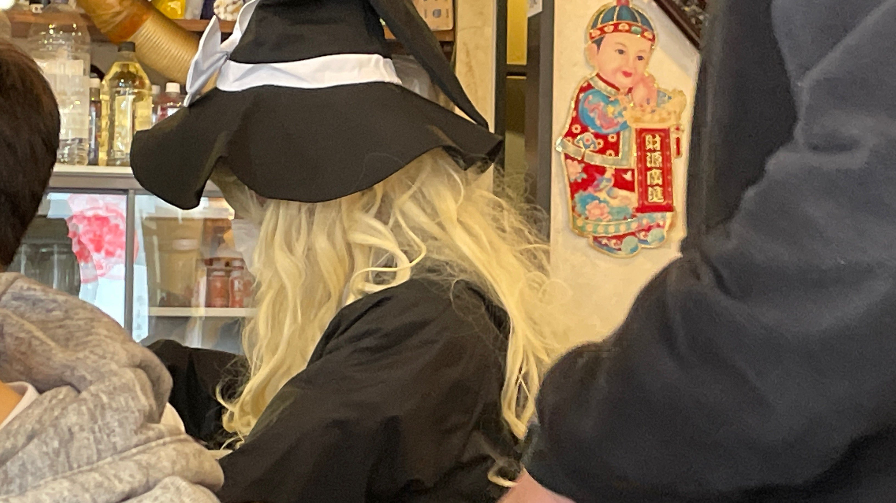
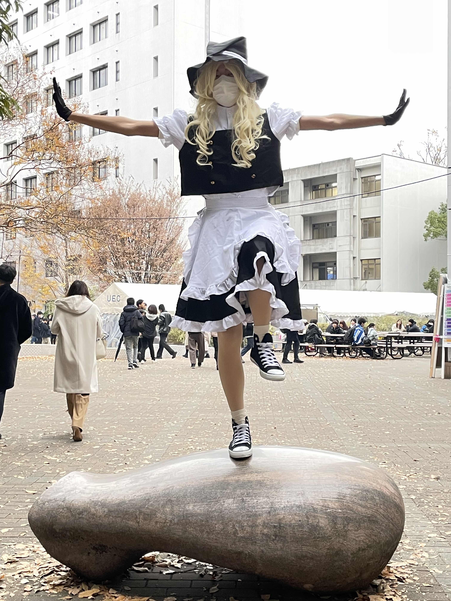
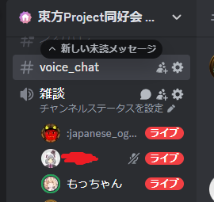

大学構内で雑にコスプレし続けた話
この記事は「コスプレ」の要素を含んでいます。そして、雑な顔が大量にでてきます。これらの要素が苦手な方は、ブラウザバックをお願いします。また、この記事は全編暖かみのある手打ちhtmlでお送りしています。
はじめに
この記事は、UEC advent calendar 2024
の14日目（12/14）の記事です。でした。多分間に合っていないので15日に出しています。すみません。というか、「散歩、徒歩、苦行アドベントカレンダー2023」の記事はどうなっているんですか…？？？？本当にすみません。卒業するまでには書き上げます…。
昨日は、「Amicii」さんの
Rustでかんたんなブログシステムを作った
でした。
簡単なブログシステムを作れるなんて……。たしかにHTML直打ちでサイトを作成したり記事を錬成したりするのは非常に酷な作業だし、変なライブラリを使うと更新作業が面倒くさいですからね。全編自己管理できるのはとてもよいとされています。
また、今年も生えているといわれている「UEC 2 Advent Calendar
2024」では、筆者と同じく19生の「きゅ～」さんの財布の盗難には気を付けよう！でした。
筆者は３週間に１度くらい「聖地巡礼」をしているのですが、あそこそんな治安わるかったか？？？？って感じです。
UEC Advent Calendar 2024
電通大生による電通大生のためのAdvent Calendar 2024 これはなに？ 12/1から12/25のクリスマスまで、毎日電通大生の有志が記事を書いて、カレンダーを電通大に染める企画です。例年、知らぬ間に有志によって動いています。
Go Advent Calendar PagesUEC 2 Advent Calendar 2024
電通大生による電通大生のためのAdvent Calendar 2024 これはなに？ 12/1から12/25のクリスマスまで、毎日電通大生の有志が記事を書いて、カレンダーを電通大に染める企画です。例年、知らぬ間に有志によって動いています。
Go Advent Calendar Pagesさて今回は、いろいろTwitterなどで物議をかもした（らしい？）、学内でコスプレをしまくった話について書きたいと思います。 まあ、８割がたは過去の振り返りだし、内容はおもいっきり無いような感じですが、ごゆっくりお付き合いください（修論につかうデバイスがぶっ壊れなければこんなデスマーチ投稿・粗削りな文章にはならなかったんだよぉ…）。
コスプレ（女装）を大学で行うきっかけ
筆者のコスプレという名のただの異性装？というか、様々な服を着るということは実は高校の時から行っていました。当時通っていた高校の「漫文連合」（この文字を書くとどこの高校か特定されそう）の部室に、漫画とかで使用していたとされるチャイナ服やメイド服などがありました。 当時も当時で謎の好奇心だけはありましたので、それを着ていました。（以下は高2の夏らしい。あまりにも若すぎる…（8年前））

そんなことをしながらTwitterとかで流していたりしてましたので、2019年4月、当時はサークル新歓が入学式前にあったころ、同じ高校出身の「じま」さんが工研に所属していまして…。
「え、もっちゃんさん、コスプレとかされてますよね？では工研にはいって女装とかして女の子になりましょう！」
という流れに。まあ、いじられキャラが定着したのでいい交流でしたし、よいきっかけだったし…（ほんとか？）。当時るーさんもかわいくなる最中でしたので……。……ということで、ここから定期的なコスプレが始まるという感じでした。
【悲報】サークルの先輩に女の子にされることが確定（？）
— もっちゃん@徒歩ドベカレ遅延@桜餅 (@sakuramochi0708) April 3, 2019
学部１年～３年
工学研究部は活動内容に「裁縫・女装」があります。なので、部室には「コルセット」「メイド服」「巫女服」「霧雨魔理沙の服」など様々ありました（ほんとなんで？）。
まあ、でも１年のときは基礎科学実験ABとかありましたし（当時は両方毎週実験毎週レポートだったので……。ほんとクソAクソB）、授業も普通にありましたので、あまり工研での活動はできず……。たまに部室で着てみたり、調布祭で変なノリとして着てみたりの程度でした。（当時ぎりぎりミスコンがあったんだよなあ……。１年のときは忙しいしとか思って出なかったけど、今思うとでときゃなあ……って。きゅ～さんはでていましたよ）
Twitterストーリーモード
— もっちゃん@徒歩ドベカレ遅延@桜餅 (@sakuramochi0708) August 30, 2019
霧雨魔理沙 @工研 pic.twitter.com/gNdrdT2r2w
では学部２年３年はどうだったのかというと、コロナです。はい。もうできていませんね。ということでパスします。
転換期となった学部４年
さて、研究室にも配属された学部４年。対面授業等も復活してきました。さすがにあんなに何もできないのはもったいなさすぎる！できることは思い立ったらやろう！という精神になり、さまざまなことを行っていました。
その中でも、転機となったのが2022年の誕生日の時。なんか当時工研Twitter内で流行してたほしいものリストを晒すものを行い、その中のネタ枠でいくつかコス用品をいれときました……。すると……
Yちゃん（ @y_chan_dev ）から、いらぬリストのトレセン学園の冬服制服を頂きました！
— もっちゃん@徒歩ドベカレ遅延@桜餅 (@sakuramochi0708) June 27, 2022
……はい？？？？？
（嬉しいです！ありがとうございます！！！🏇） pic.twitter.com/hXZ2kUvJVL
ちょびさん（ @evolution3221 ）から、XXLサイズの冬服セーラーを頂きました！
— もっちゃん@徒歩ドベカレ遅延@桜餅 (@sakuramochi0708) July 2, 2022
雑な乞食をしてしまいすいませんでしたorz ありがとうございます！！！！！！
（しっかりした材質だから、雑に着れないので着用シーンは後で…） pic.twitter.com/rFL2aNxspa
つまみ （ @TrpFrog ）さんから、リスト外の「布」と「狐のしっぽ」を頂きました！！ありがとうございます！！
— もっちゃん@徒歩ドベカレ遅延@桜餅 (@sakuramochi0708) June 11, 2022
……？？？？？？？？？？？ pic.twitter.com/iZtCzZyz80
リスト外からもきているが……？ということで、渡されたから着なきゃいけないよなあ？ということで、ウィッグなどを準備し、工研浜見夏合宿や調布祭などで着ました……（調布祭のときのバリエーションがない気がしますが、当時コロナ発症した部員がいて２日目から展示場が封鎖されまして、その中にコス用具を入れっぱなしにしてしまったのですよ……。
ウィッグとかしっぽとかないので最低限のトレセン冬服。
— もっちゃん@徒歩ドベカレ遅延@桜餅 (@sakuramochi0708) June 27, 2022
この時期にあちぃんじゃ…
（ @y_chan_dev からのリクエストでとりま着てみた） pic.twitter.com/vas8ecE79d
モチ娘、夏合宿午前5時半の浜辺ダッシュ pic.twitter.com/WAW25lG0kN
— もっちゃん@徒歩ドベカレ遅延@桜餅 (@sakuramochi0708) August 28, 2022
今日のハイライト
— もっちゃん@徒歩ドベカレ遅延@桜餅 (@sakuramochi0708) November 18, 2022
メジロマックイーンとセーラー服の組み合わせ❤ pic.twitter.com/Ny24Ig3Lfl
昨日生協前でとったセーラーマックイーン（表情筋くん...） pic.twitter.com/GqNlDnxvbC
— もっちゃん@徒歩ドベカレ遅延@桜餅 (@sakuramochi0708) November 19, 2022
これは食神餃子王に「霧雨魔理沙」で訪れた話。Prismさんに見つかってしまいました。
ラボでスプラ鑑賞なう
— もっちゃん@徒歩ドベカレ遅延@桜餅 (@sakuramochi0708) December 28, 2022
（あれ、モチ娘？メジロモッチリーン？） pic.twitter.com/zTH2eppB9e
桜は綺麗でした pic.twitter.com/uvshRe8t3g
— もっちゃん@徒歩ドベカレ遅延@桜餅 (@sakuramochi0708) March 22, 2023
まあ、最後はまじでなにをやっていたんだという感じですが、衣装が増えるとちょっと楽しくなるよねということで、どんどんコスの頻度が増えていきました……。(一種の承認欲求があったのか、はたまたもう振り切ってしまったのか)
ちなみにこのころから「大学でコスプレするのどうなの？」とか「これやられているからミスコンがぁ」とかいろいろ言われていましたが、こちらについては「個人が勝手にやっていること」という扱いにしていたので、大学に言われることは「ほとんど」ありませんでした。しかしながら、ある程度自制しながらやっていたというのも事実です（露出の激しいものをしない、あきらかにコスプレであるということをわかりやすくするなど）。
学籍番号ロンダリングに成功した修士１年
修士１年ということで、学籍番号がリセットされました。ということは書類上では別人ですね？（おい）。ということで、学部時代は学生課とバトルしてましたが、修士生では気軽にやべー奴になっていました（新歓・ハロウィーン・調布祭を中心に）。
#モッチリーン三姉妹
— もっちゃん@徒歩ドベカレ遅延@桜餅 (@sakuramochi0708) April 9, 2023
モチ娘、勧誘中です(´｡✪ω✪｡｀)✧*。
#でんまる #今日の工研 pic.twitter.com/H4cuQBO4Oq
らぼでストゼロ決めてる pic.twitter.com/myllrtikiz
— もっちゃん@徒歩ドベカレ遅延@桜餅 (@sakuramochi0708) May 31, 2023
本日はありがとうございました〜
— もっちゃん@徒歩ドベカレ遅延@桜餅 (@sakuramochi0708) October 31, 2023
#モチ娘 pic.twitter.com/8EdFL8S5GV
Tips:日付的にハロウィーンの日に外に出て配ってた気がする。
もっちゃん(@sakuramochi0708 )さんとぬい達と撮らせていただきました‼️ pic.twitter.com/7qYF3MSXfA
— AtP (@atttmark) November 26, 2023
ウマ娘サバゲーダービー （？）
— もっちゃん@徒歩ドベカレ遅延@桜餅 (@sakuramochi0708) November 25, 2023
#調布祭
（ UECサバゲー愛好会さま @UecSurvivalGame 、ありがとうございました！） pic.twitter.com/v1GonbR3aV
そして、2024年1月、ラボ民からフリーレンコスが送られてきました。どうやらもともと12月に送られて、そのままコミケでコスさせるドッキリを計画していたようですが、間に合わなかったそうです。もし実行されていたら自分は2024年に年を越せていなかったのかもしれません……。
モチーレン、輪郭の断片で
— もっちゃん@徒歩ドベカレ遅延@桜餅 (@sakuramochi0708) January 4, 2024
（撮影：ラボ民） pic.twitter.com/Vm3eY0mhjD
後ろから見るとフリーレンにしか見えない by 複数の方 pic.twitter.com/wbBujRq3ND
— もっちゃん@徒歩ドベカレ遅延@桜餅 (@sakuramochi0708) January 4, 2024
そして修士２年の現在
そして修士２年の現在、実はさらにコスの種類がふえ（ライザ）、さらに適当になっています（おい）。
モチ娘、サクラダービー （with 正邪）
— もっちゃん@徒歩ドベカレ遅延@桜餅 (@sakuramochi0708) April 4, 2024
#モッチリーン三姉妹 pic.twitter.com/6R4qPPr7M1
4/4 uec新歓 本日は メジロ マックイーン（メジロもっちりーん）で参戦します°・*:.。.☆
— もっちゃん@徒歩ドベカレ遅延@桜餅 (@sakuramochi0708) April 4, 2024
uec24の方でも、それ以外でも、お気軽にお声がけ下さいな(´｡✪ω✪｡ ` )
（隠しきれてなかったのでツイ消しして再ツイート） pic.twitter.com/3pgTVpdZ6D
電気通信大学は、西8号館の前がもっとも桜が綺麗です！
— もっちゃん@徒歩ドベカレ遅延@桜餅 (@sakuramochi0708) April 6, 2024
なので、フリーレン。 pic.twitter.com/WUkRXUscH5
ということで、『ライザ』のコスプレです。
— もっちゃん@徒歩ドベカレ遅延@桜餅 (@sakuramochi0708) August 13, 2024
コミケC104-4日目のコスプレかもしれない…？
（工研合宿の3日目朝5:20、湘南海岸にて） #今日の工研 https://t.co/Tq1uHXTWLg pic.twitter.com/o2ulmK9EVe
学費が使われてたので記念にパシャリ pic.twitter.com/CpojrGOmuj
— もっちゃん@徒歩ドベカレ遅延@桜餅 (@sakuramochi0708) October 31, 2024
そして、直近の調布祭ではついに「メイク」に手を出し始めました。これは、学内でできなくなる（卒業するからね）ので、せめて外のイベントでやるときに見た目だけでも整えたいなということで勉強しています……。実は３月かなにかにじまさんとかにメイクをさせられる日が決まっているとかきまっていないとか…？
あげる写真間違えたから再掲！
— もっちゃん@徒歩ドベカレ遅延@桜餅 (@sakuramochi0708) November 22, 2024
その後、ジェットくん @hpl_hastur にもメイクして貰えた(´｡✪ω✪｡ ` )
（鼻から下は写真掲載自己レギュ違反のため隠す） pic.twitter.com/2e0vwOWstT
ということで、メイクしたフリーレンで歩いてます！ pic.twitter.com/nt4xjHttYi
— もっちゃん@徒歩ドベカレ遅延@桜餅 (@sakuramochi0708) November 24, 2024
今振り返って（まとめ）
まずひとこと。ひどいねえｗｗｗｗｗｗｗ。特にメイクできてないのひどいねえｗｗｗｗ。ということで６年間醜いものをネットの海に放出し続けてしまい申し訳ございませんでした。いいねしてくださった皆さん、ありがとうございました。そして、定期的に気が狂ったかのようにラボ内で着ていて邪魔をしてしまったラボの皆さん、本当にご協力ありがとうございました。
実は誰かの教授も言ってたのですが、昔はハロウィーンとか普通の授業でもコスプレや仮装をして参加してたり学内を歩いてた人がいたらしいです。それが大学らしいし、面白いだろうなということらしいです。その文化が消えそうで消えない瀬戸際のラインで、何とか「それやめたほうがいいんじゃないの？」とかいう同調圧力に屈することなくやり続けられたのはよかったのかなとおもいます。
... ... というか、筆者が楽しくてやってたので、まあ。ある程度周りに配慮しつつ、自分がやりたいことを思いっきりやるということは、それこそ人間らしい活動なのかなと思います。AIとかそこらへんがどんどんクリエイティブな領域に進出していってますが、SNSなどでどちらがより素晴らしい〇〇をしているか争っている人もいますが、最後は自分が楽しめればそれでいいんですよ。
コスプレに限らず、何かやってみたいなと思ったことがあれば積極的にチャレンジしてみて、楽しんでみてください。きっとあなたの人生に１つの良い思い出話が追加されると思います。「あの時やっておけば」の後悔を感じるまえに…。（文章のまとめがへたくそなの、ほんとどうにかしたほうがいいと思う。そして、この記事なにがいいたかったんだ…。）
えーと、投稿が26時間ほど遅延し、またこんな長文クソ記事・クソ写真にも関わらず、最後まで読んでくださった方に感謝を申し上げます。ありがとうございました。
明日（事実上今日）15日のUEC Advent calendar 2024は「へるくん」さんの記事です。実は今、でんまるのDiscordボイチャで一緒に記事を書く作業をしています。早く投稿しろしろと言われていたので、きっとこの記事があがった2時間後くらいまでには記事があがっていることでしょう！お楽しみに！ そして、筆者とは、3月くらいにまだだせていないドベカレをだします。お楽しみに…！
